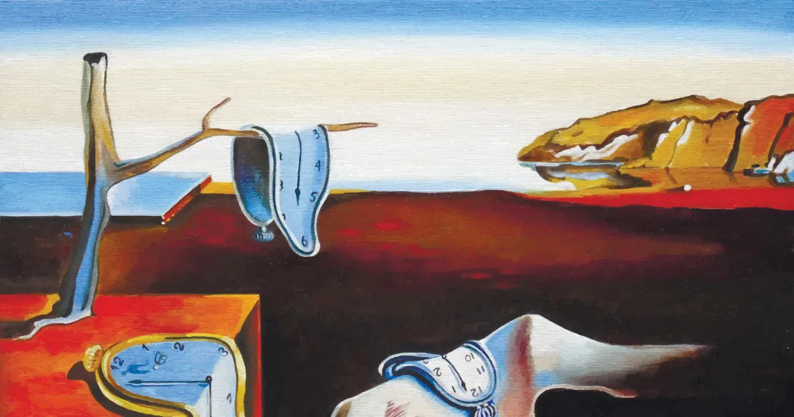
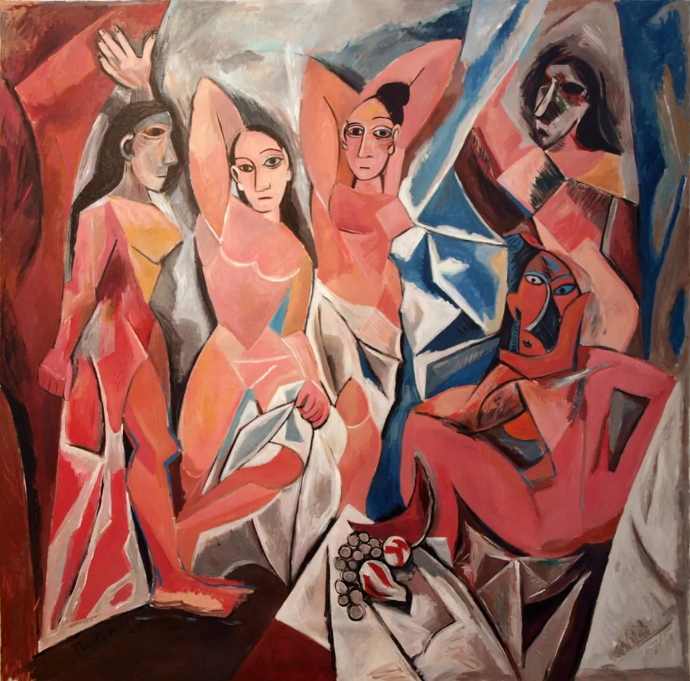

Un Viaje Digital al Universo de Salvador Dalí
Descubre una experiencia que ayuda a mejorar la experiencia del visitante del museo. Este espacio simula cómo un avatar interactivo podría guiarte y explicarte una de las obras de arte como lo haría el mismísimo Dalí.
Obra Destacada: "La persistencia de la memoria"

Vídeo Explicativo del Avatar
Este vídeo simula una interacción con el avatar de Dalí, explicando su obra y como a la vez puede llegar a ser inclusiva.
Picasso y sus Señoritas de Avignon
Descubre una experiencia que ayuda a mejorar la experiencia del visitante del museo. Este espacio simula cómo un avatar interactivo podría guiarte y explicarte una de las obras de arte de Pablo Picasso.
Obra Destacada: "Las señoritas de Avignon"

Vídeo Explicativo del Avatar
Este vídeo simula una interacción con el avatar de Picasso, explicando su obra.
Herramientas Utilizadas para esta Demostración
Para la creación de esta página de ejemplo y la simulación de la experiencia, se han utilizado las siguientes tecnologías y recursos:
- Spanish-F5 : Clonación de voz
- Gemini, ChatGPT y/o otros : Para responder preguntas y generación de texto con personalidad
- Makefilm.ai : Para generar vídeo del autor hablando
- HTML5 y Gemini: Para la estructura básica de la página web.